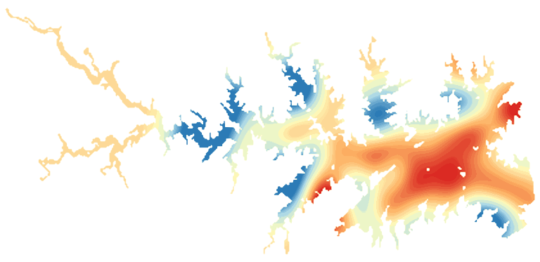

LakeScope › SC
Lake Murray today
Updated 2026-11-26 - Atlas Labs
Clear water, 58°F water, level falling, 3 ft below normal, windy Thursday (20 mph W).
Water level
352.82 ft
USGS gauge 02168500 - 2026-11-26
7-day trend: falling (-0.38 ft). Compared with normal for this date: -3.0 ft (same weeks, 2016-2025).
Water clarity and algae
Clear water Last clear view: over a week ago. 2 cloudy passes since.
Surface temperature
58°F
seen from space on 2026-11-23

Weather, next 3 days
| Day | Sky | High / low | Wind | Rain |
|---|---|---|---|---|
| Thursday | Light Rain Likely then Mostly Cloudy | 57 / 42°F | 20 mph W | 56% |
| Friday | Mostly Cloudy | 52 / 41°F | 22 mph W | 2% |
| Saturday | Sunny | 60 / 44°F | 9 mph SW | 0% |
Sunrise 07:08 - sunset 17:16 - Full moon. National Weather Service.
Get the LakeScope app: alerts and the 3-D view of Lake Murray